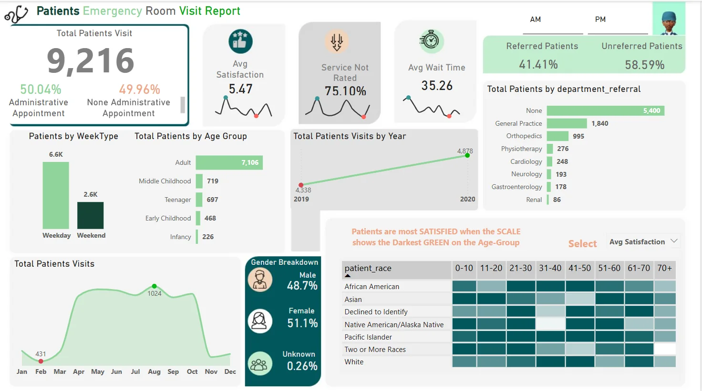

The solution
I built this on synthetic demonstration data. The formulas and metadata on this page come from my Power BI project files. The code is shown as stored and only re-indented. My local folder path in the M query is shortened.
The solution is a Power BI Project (PBIP) with a report definition and a semantic model in Import mode. M expressions read the CSV, a Date table is calculated in DAX, and a dedicated Calculation table holds the measures. A Parameter table defines a field parameter that switches the heatmap between Average Satisfaction Score and Average wait Time.
| Component | Where it lives | Role |
|---|---|---|
| Power BI Project (PBIP) | PatientsAnalysis - Copy.pbip | Project based source form of the report and model |
| Report definition | Report/definition/pages and visuals | Page layout, visual types, fields and report objects |
| Semantic model | SemanticModel/definition/*.tmdl | Tables, columns, measures, partitions and relationships |
| Power Query / M | Patients Dataset partition | CSV ingestion and shaping |
| DAX | Calculated columns, Calculation table, Date table | Derived categories, KPI calculations and calendar attributes |
| Source data | Hospital ER - Copy.csv | A synthetic 11 column dataset |
The data and profiling
The source file has 9,216 rows and 11 columns, covering 1 April 2019 to 30 October 2020. Every patient_id is unique in this file, but nothing says whether an ID means a person or a visit.
| Check | Result | What it means |
|---|---|---|
| Row count | 9,216 | The baseline for reconciling everything else. The report's Total Patients card also shows 9,216. |
| Column count | 11 | The M source step explicitly expects 11 columns. |
| Unique patient_id | 9,216 | Unique in this file. The true grain needs confirming. |
| Blank patient_sat_score | 6,699 (72.7%) in a direct count | The report shows 75.10% not rated. See the note below. |
| Blank department_referral | 5,400 (58.6%) in a direct count | The report shows a None category of exactly 5,400. See the note below. |
| Blanks in other columns | None observed | Does not remove the need for schema and domain checks. |
| Age range | 1 to 79 | The age group formulas cover every observed age. |
| Wait time range | 10 to 60 | Unit and sensible limits are not specified. |
Two numbers do not match between the direct file profile and the report. Satisfaction: the report says 75.10% not rated and an average of 5.47, the profile says 72.7% blank and 4.99. Referral: the profile counted 5,400 blanks, while the report shows 5,400 rows with the value None. The satisfaction gap fits about 222 scores of exactly 0, which DAX drops. The referral gap fits None being literal text in the file that the profiling tool read as blank. Both are hypotheses to confirm in the CSV.
Data dictionary
| Column | Type and role | Transform and notes |
|---|---|---|
| date | Date-time in the CSV | Converted to a date after the time is extracted. |
| patient_id | Text identifier | Imported as text. Used in the relationship between the patient tables. |
| patient_gender | Text category | Values M, F and NC. |
| patient_age | Integer | Used by Age Buckets and Age Group. |
| patient_sat_score | Integer, nullable | The average measure excludes blank scores. % No Rating counts blanks. |
| patient_first_inital | Text | Source spelling kept. Combined with the surname. |
| patient_last_name | Text | Combined with the first initial into Full_Name. |
| patient_race | Text category | The heatmap row field. |
| patient_admin_flag | Boolean | Used for the TRUE and FALSE administrative percentages. |
| patient_waittime | Integer | Used by the average wait measure and the heatmap parameter. |
| department_referral | Text | Shown in the report with a None category of 5,400 rows and seven departments for the other 3,816. |
| Moment | Derived in M | The last 8 characters of the date text. The model metadata says it is a time. |
| Full_Name | Derived in M | First initial and last name joined with a space. |
| Age Buckets | DAX calculated column | Ten year bands. The last label says 70+ although the logic means 71+. |
| Age Group | DAX calculated column | Infancy, Early Childhood, Middle Childhood, Teenager, Adult. |
| AM_PM | DAX calculated column | Uses HOUR(Moment) < 12. |
Power Query steps
The M query for Patients Dataset runs these steps in order. They are documented as built. Improvements are listed after the code.
| Step | What it does | Why, and what to watch |
|---|---|---|
| Source | Reads the CSV with Csv.Document, expecting 11 columns, Windows-1252 encoding and QuoteStyle.None | Reads a local file. The fixed column count makes schema changes fail loudly, which is useful but unplanned. |
| Promoted Headers | Uses the first row as column names | Needed because the CSV has a header row. |
| Changed Type | Sets date, text, integer and logical types | Gives every column the type the model expects. |
| Inserted Last Characters | Takes the last 8 characters of the date as text | An attempt to capture the time of day. It depends on the locale. |
| Changed Type1 | Changes date to date only | Done after the time text is taken out. |
| Renamed Columns | Renames the new column to Moment | A clearer name. |
| Changed Type2 | Keeps Moment as text | Conflicts with the model, which treats Moment as a time. |
| Merged Columns | Joins first initial and last name into Full_Name | Only for display. The dashboard KPIs do not use names. |
let
Source = Csv.Document(
File.Contents("C:\...\Hospital ER - Copy.csv"),
[Delimiter=",", Columns=11, Encoding=1252, QuoteStyle=QuoteStyle.None]
),
#"Promoted Headers" = Table.PromoteHeaders(Source, [PromoteAllScalars=true]),
#"Changed Type" = Table.TransformColumnTypes(#"Promoted Headers", {
{"date", type datetime}, {"patient_id", type text}, {"patient_gender", type text},
{"patient_age", Int64.Type}, {"patient_sat_score", Int64.Type},
{"patient_first_inital", type text}, {"patient_last_name", type text},
{"patient_race", type text}, {"patient_admin_flag", type logical},
{"patient_waittime", Int64.Type}, {"department_referral", type text}
}),
#"Inserted Last Characters" = Table.AddColumn(
#"Changed Type", "Last Characters",
each Text.End(Text.From([date], "en-GB"), 8), type text
),
#"Changed Type1" = Table.TransformColumnTypes(#"Inserted Last Characters", {{"date", type date}}),
#"Renamed Columns" = Table.RenameColumns(#"Changed Type1", {{"Last Characters", "Moment"}}),
#"Changed Type2" = Table.TransformColumnTypes(#"Renamed Columns", {{"Moment", type text}}),
#"Merged Columns" = Table.CombineColumns(
#"Changed Type2", {"patient_first_inital", "patient_last_name"},
Combiner.CombineTextByDelimiter(" ", QuoteStyle.None), "Full_Name"
)
in
#"Merged Columns"What I would change
Hard coded file path
The query points at a folder on my machine. Replace it with a parameter or a governed location before handover.
Time from text
Taking the last 8 characters of a date as text depends on the locale and breaks easily. Time.From([date]) gives a typed time first.
Moment type
The query makes Moment text while the model treats it as a time. Pick one type and test the AM_PM column against it.
Quote style
QuoteStyle.None can mishandle values with quoted commas. Use the quote style the CSV actually follows.
Fixed column count
Columns=11 hides schema changes. Add an explicit schema check with a clear failure.
Full_Name
Built for display, but no KPI needs it. Remove it from the model if the report never shows names.
Misspelt field
patient_first_inital is spelt wrongly in the source. Keep it for lineage, but rename it in a cleaned layer.
Data model and relationships
| Relationship | How it is stored | Review |
|---|---|---|
| Patients Dataset[patient_id] to Hospital ER - Copy[patient_id] | Patients Dataset is the one side. Filtering runs in both directions. | The two tables have almost identical fields. Find out why a second table exists. Two way filtering adds ambiguity. |
| Patients Dataset[date] to Date[Date] | A relationship exists. Cardinality is not shown in the stored snippet. | Confirm it is active and one to many, and mark Date as the date table. |
| Hospital ER - Copy[date] to LocalDateTable[Date] | Links to an auto generated date table. | Probably redundant next to the Date table. Review the automatic date setting so two date paths do not compete. |
The relationships confirm two patient tables and a separate Date table. The intended star schema is not fully there, because the second patient table is joined by patient_id with filtering in both directions. For this dataset the better target is one visit level fact table, related one to many from a Date dimension, with measures in their own table.
Date table
ADDCOLUMNS(
CALENDARAUTO(),
"Year", YEAR([Date]),
"Month", FORMAT([Date], "mmm"),
"Weektype", if (WEEKDAY([Date]) = 1, "Weekend", IF(WEEKDAY([Date]) = 7, "Weekend", "Weekday")),
"Weekday", FORMAT([Date], "ddd"),
"MonthNum", MONTH([Date])
)CALENDARAUTO() builds the calendar from the date columns in the model, then I add year, short month, weektype, short weekday and a month number. Month is sorted by that number. Sunday and Saturday are labelled Weekend. Because CALENDARAUTO() can stretch the calendar based on other date columns, the real date range should be checked, and the table marked as a date table in Power BI.
Calculated columns
Age Buckets
Calculated columnTechnique: SWITCH(TRUE()) checks the conditions in order and returns the label for the first one that is true. That gives bands of 0 to 10, 11 to 20, and so on up to 61 to 70, then a catch-all.
SWITCH(
TRUE(),
'Patients Dataset'[patient_age] <= 10, "0-10",
'Patients Dataset'[patient_age] <= 20, "11-20",
'Patients Dataset'[patient_age] <= 30, "21-30",
'Patients Dataset'[patient_age] <= 40, "31-40",
'Patients Dataset'[patient_age] <= 50, "41-50",
'Patients Dataset'[patient_age] <= 60, "51-60",
'Patients Dataset'[patient_age] <= 70, "61-70",
"70+"
)Review note. Ages 71 and above reach the last branch, so the label should say 71+, not 70+. A negative age would also land in the first band, so the age range should be checked if this is reused on new data.
Age Group
Calculated columnTechnique: a variable holds the row's age, then nested IFs assign a life stage. Boundaries are inclusive: 2 or under is Infancy, up to 6 Early Childhood, up to 12 Middle Childhood, up to 18 Teenager, and anything higher is Adult.
var _patientAge = 'Patients Dataset'[patient_age]
return
IF(
_patientAge <= 2, "Infancy",
IF(_patientAge <= 6, "Early Childhood",
IF(_patientAge <= 12, "Middle Childhood",
IF(_patientAge <= 18, "Teenager",
"Adult"
)
)
)
)Review note. These are my own groupings, not a clinical or standard life stage list. A SWITCH(TRUE()) would be easier to maintain as the categories grow. Adult covers 61 years of age, which is why the age chart needs reading per year of age.
AM_PM
Calculated columnTechnique: HOUR() pulls the hour out of Moment. Hours before 12 are AM and 12 to 23 are PM.
IF(HOUR('Patients Dataset'[Moment]) < 12, "AM", "PM")Review note. This is only right if Moment is a real time value. The query creates it as text, so the conversion needs testing. A typed Time.From([date]) in Power Query would be safer.
DAX measures
Measures are worked out on the fly in the current filter context. Calculated columns are stored per row at refresh. Each measure below is copied from the model and only re-indented. I have grouped them by job, and the order is mine.
Total Patients
MeasurePurpose: the base visit count that most other measures divide by.
Logic: COUNTROWS counts the rows left after filters.
COUNTROWS('Patients Dataset')Review note. Because patient_id is unique in this file, the row count equals the unique ID count. For production, call it Total Visits unless the business confirms one row per person.
Average wait Time
MeasurePurpose: the mean waiting time.
Logic: AVERAGE ignores blanks and averages patient_waittime in the current context.
AVERAGE('Patients Dataset'[patient_waittime])Review note. The report shows 35.26, which matches the source mean of 35.2599, so this one reconciles. The unit is still not specified, so confirm it is minutes before labelling the card.
Average Satisfaction Score
MeasurePurpose: the mean of the satisfaction scores that were recorded.
Logic: CALCULATE applies a not-blank filter, then AVERAGE takes the mean of what is left.
CALCULATE(
AVERAGE('Patients Dataset'[patient_sat_score]),
'Patients Dataset'[patient_sat_score] <> BLANK()
)Review note. The report shows 5.47, but the mean of the non-blank scores in the file is 4.9921, so this does not reconcile. In DAX, comparing a number to BLANK() is also true for 0, so any scores of 0 would be dropped here. Dropping about 222 zeros would give exactly 5.47. Count the zeros. If a 0 is a real rating, test for blank with ISBLANK() instead.
% No Rating
MeasurePurpose: a completeness indicator for the satisfaction survey.
Logic: a variable counts the rows whose score equals BLANK(), and DIVIDE returns that over Total Patients.
VAR _NoRatings =
CALCULATE(
[Total Patients],
'Patients Dataset'[patient_sat_score] = BLANK()
)
return
DIVIDE(
_NoRatings,
[Total Patients]
)Review note. This is a data completeness measure, not a negative rating. The report shows 75.10%, against 72.7% blank in a direct count. The same zero-versus-blank behaviour would explain the difference.
% Administrative Schedule
MeasurePurpose: the share of visits with the administrative flag set.
Logic: FILTER keeps the visible rows where the flag is TRUE, COUNTROWS counts them, and DIVIDE protects against a zero denominator.
DIVIDE(
COUNTROWS(
FILTER(
'Patients Dataset',
'Patients Dataset'[patient_admin_flag] = TRUE())
),
[Total Patients]
)Review note. This assumes TRUE means an administrative appointment. The flag still needs a written definition. The report shows 50.04%, which matches 4,612 of 9,216.
% None Administrative Schedule
MeasurePurpose: the share without the flag.
Logic: the same pattern, counting rows where the flag is FALSE.
DIVIDE(
COUNTROWS(
FILTER(
'Patients Dataset',
'Patients Dataset'[patient_admin_flag] = FALSE())
),
[Total Patients]
)Review note. It only mirrors the TRUE share if every row has a non-blank flag. Here the two counts add up to all 9,216 rows, and the report shows 49.96%.
% Unreferred Patients
MeasurePurpose: the share of visits with no referral.
Logic: CALCULATE counts rows where department_referral equals the text none, and DIVIDE returns that over Total Patients.
Var _FilterPatients =
CALCULATE(
[Total Patients],
'Patients Dataset'[department_referral] = "none"
)
RETURN
DIVIDE(
_FilterPatients,
[Total Patients]
)Review note. The report shows 58.59%, which is exactly 5,400 of 9,216, and the bar chart has a None category of 5,400. So the measure works as written. A direct file profile read the same rows as blank, which suggests None is literal text in the CSV. What None means still needs confirming.
% Referred Patients
MeasurePurpose: the share of visits with a referral department.
Logic: the same pattern, counting rows that are not equal to none.
Var _FilterPatients =
CALCULATE(
[Total Patients],
'Patients Dataset'[department_referral] <> "none"
)
RETURN
DIVIDE(
_FilterPatients,
[Total Patients]
)Review note. The report shows 41.41%, which matches 3,816 of 9,216. The business definition should separate a real referral destination, a true no-referral, and a missing value.
% Male Visit
MeasurePurpose: the share of visits coded M.
Logic: CALCULATE narrows Total Patients to gender M, and DIVIDE returns that over all rows in the current context.
DIVIDE(
CALCULATE(
[Total Patients], 'Patients Dataset'[patient_gender] = "M"
),
[Total Patients]
)Review note. The category codes should be written down in a data dictionary.
% Female Visit
MeasurePurpose: the share of visits coded F.
Logic: the same pattern with gender F.
DIVIDE(
CALCULATE(
[Total Patients], 'Patients Dataset'[patient_gender] = "F"
),
[Total Patients]
)Review note. The category codes should be written down in a data dictionary.
% Unknown
MeasurePurpose: the share of visits coded NC, shown as Unknown on the report.
Logic: the same pattern with gender NC.
DIVIDE(
CALCULATE(
[Total Patients], 'Patients Dataset'[patient_gender] = "NC"
),
[Total Patients]
)Review note. NC should be explained in the data dictionary, not assumed to mean one particular phrase.
CF Max Point (Month)
MeasurePurpose: a conditional formatting marker for the lowest and highest months.
Logic: SUMMARIZE builds a month level table, ADDCOLUMNS adds Total Patients, ALLSELECTED keeps the outside selections, and MINX and MAXX find the extremes. SWITCH returns 0 for the minimum and 1 for the maximum.
VAR _PatientTable =
CALCULATETABLE(
ADDCOLUMNS(
SUMMARIZE('Date', 'Date'[Month]),
"@Total_Patients", [Total Patients]
),
ALLSELECTED()
)
VAR _MinValu = MINX(_PatientTable, [@Total_Patients])
VAR _Maxvalu = MAXX(_PatientTable, [@Total_Patients])
VAR _TotalPatients = [Total Patients]
RETURN
SWITCH(
TRUE(),
_TotalPatients = _MinValu, 0,
_TotalPatients = _Maxvalu, 1
)Review note. A month name is not unique across years, so this groups the same month from different years together. That is what shapes the monthly chart. A year and month field or a month start date would fix it. Ties can mark more than one point, and other points return BLANK.
Values Max Point (Month)
MeasurePurpose: the data label shown on the lowest and highest months, which is where 431 and 1,024 come from.
Logic: the same month summary, returning Total Patients when the current value matches the minimum or maximum.
VAR _PatientTable =
CALCULATETABLE(
ADDCOLUMNS(
SUMMARIZE('Date', 'Date'[Month]),
"@Total_Patients", [Total Patients]
),
ALLSELECTED()
)
VAR _MinValu = MINX(_PatientTable, [@Total_Patients])
VAR _Maxvalu = MAXX(_PatientTable, [@Total_Patients])
VAR _TotalPatients = [Total Patients]
RETURN
SWITCH(
TRUE(),
_TotalPatients = _MinValu, [Total Patients],
_TotalPatients = _Maxvalu, [Total Patients]
)Review note. Returns BLANK for every other month. The same month-across-years caveat applies.
CF Max Point (Year)
MeasurePurpose: the same marker idea for the yearly chart.
Logic: summarises Total Patients by year, finds the minimum and maximum, and returns 0 or 1.
VAR _PatientTable =
CALCULATETABLE(
ADDCOLUMNS(
SUMMARIZE('Date', 'Date'[Year]),
"@Total_Patients", [Total Patients]
),
ALLSELECTED()
)
VAR _MinValu = MINX(_PatientTable, [@Total_Patients])
VAR _Maxvalu = MAXX(_PatientTable, [@Total_Patients])
VAR _TotalPatients = [Total Patients]
RETURN
SWITCH(
TRUE(),
_TotalPatients = _MinValu, 0,
_TotalPatients = _Maxvalu, 1
)Review note. A tie can mark more than one year. ALLSELECTED depends on the report's slicers and visual filters.
Values Max Point (Year)
MeasurePurpose: the data label on the lowest and highest years, which shows 4,338 and 4,878.
Logic: returns Total Patients for the years that match the minimum or maximum.
VAR _PatientTable =
CALCULATETABLE(
ADDCOLUMNS(
SUMMARIZE('Date', 'Date'[Year]),
"@Total_Patients", [Total Patients]
),
ALLSELECTED()
)
VAR _MinValu = MINX(_PatientTable, [@Total_Patients])
VAR _Maxvalu = MAXX(_PatientTable, [@Total_Patients])
VAR _TotalPatients = [Total Patients]
RETURN
SWITCH(
TRUE(),
_TotalPatients = _MinValu, [Total Patients],
_TotalPatients = _Maxvalu, [Total Patients]
)Review note. Returns BLANK for every other year.
HeatMap Caption
MeasurePurpose: a caption that changes with the metric chosen for the heatmap.
Logic: SELECTEDVALUE reads the parameter order. If it is 0 the satisfaction caption shows, otherwise the wait time caption shows.
var _selectedMeasure =
SELECTEDVALUE(Parameter[Parameter Order])
RETURN
IF(_selectedMeasure = 0,
" Patients are most SATISFIED when the SCALE shows the Darkest GREEN on the Age-Group",
"The Darkest Green on the scale denotes LOW wait Time on the Age-Group"
)Review note. The second caption also shows when nothing is selected or more than one item is, so the parameter should stay single select.
Field parameter and heatmap
{
("Avg Satisfaction", NAMEOF('Calculation'[Average Satisfaction Score]), 0),
("Avg wait Time", NAMEOF('Calculation'[Average wait Time]), 1)
}The Parameter table holds two selectable metrics. Order 0 points at Average Satisfaction Score and order 1 at Average wait Time. The heatmap reads whichever is chosen, and the HeatMap Caption measure reads the order to show the matching explanation. A field parameter lets one visual show different measures without building the visual twice.
The report page
The report has one page, FitToPage at 1280 by 720. The visual files show cards, clustered bar and column charts, a line chart, an area chart, a pivot style heatmap, a slicer, a text box and one custom visual.

| Visual group | Fields and measures | Purpose |
|---|---|---|
| KPI cards | Total Patients, Average Satisfaction Score, % No Rating, Average wait Time | Headline summary |
| Administrative split | % Administrative Schedule, % None Administrative Schedule | Split of the boolean flag |
| Referral bar chart | department_referral by row count | Referral categories, including None |
| Age group bar chart | Age Group and Total Patients | Visits across life stage bands |
| Weekday and weekend chart | Date[Weektype] and Total Patients | Volume by day type |
| Yearly trend | Date[Year], Total Patients, the year marker measures | Yearly counts with the extremes marked |
| Monthly trend | Date[Month], Total Patients, the month marker measures | The monthly shape. Combines years. |
| Gender panel | % Male Visit, % Female Visit, % Unknown | Share by gender code |
| Heatmap | patient_race by Age Buckets, with the selectable metric | Compares the chosen metric across groups |
| AM and PM selector | AM_PM | Probably filters time of day. Interaction settings need checking in Desktop. |
Validation plan
I wrote the checks first and then compared them with the report screenshot. Some now reconcile, and two do not.
| Test | Check | Expected | Status |
|---|---|---|---|
| DQ-01 | Source row count | 9,216 rows reconcile to the model | Reconciles. The report card shows 9,216. |
| DQ-02 | Identifier uniqueness | patient_id matches the agreed grain | 9,216 unique IDs. The business grain still needs confirming. |
| DQ-03 | Satisfaction completeness | Blank and rated counts add up | Direct count: 6,699 blank, 2,517 rated. The report shows 75.10% not rated, so it does not match yet. |
| DQ-04 | Referral completeness | Blank, none and destinations profiled separately | Profile: 5,400 blank, 3,816 filled. The report shows None for the same 5,400 rows, so the file may hold literal None text. |
| DQ-05 | Average satisfaction | DAX equals the source mean of the non-blank scores | Source mean 4.9921. The report shows 5.47. Does not reconcile. Zero scores are the leading suspect. |
| DQ-06 | Average wait | DAX equals the source average | Source mean 35.2599. The report shows 35.26. Reconciles. Unit still to confirm. |
| DQ-07 | Administrative split | TRUE plus FALSE equals the total | 4,612 + 4,604 = 9,216. The report shows 50.04% and 49.96%. Reconciles. |
| DQ-08 | Age bucket edges | Test 0, 10, 11, 70, 71 and the maximum age | The last label should be 71+, not 70+. |
| DQ-09 | AM and PM boundary | Test 00:00, 11:59, 12:00 and 23:59 | Needs a typed time check in Desktop. |
| DQ-10 | Date relationships | Active relationships filter every visual as expected | Model inspection only. Runtime not verified. |
| DQ-11 | Referral measures | Blanks, none and real destinations checked separately | The measures work as written, since 58.59% matches 5,400 of 9,216. The meaning of None is still to confirm. |
| DQ-12 | Extreme point measures | Test ties, one period, multi year months and slicers | Open. The monthly shape matches the date coverage, which points the same way. |
Known issues and what I would fix
| Severity | What I found | What I would do |
|---|---|---|
| High | The report does not reconcile to the source for satisfaction. It shows 5.47 and 75.10%, the file gives 4.99 and 72.7%. Scores of 0 are the likely cause, because DAX treats 0 as BLANK() in comparisons. | Count the zero scores. If a 0 is a real rating, test with ISBLANK(). If it means not rated, write that in the data dictionary. |
| High | Two similarly shaped patient tables joined by patient_id, with filtering in both directions. | Confirm the purpose, and prefer one fact table unless there is a documented reason. |
| High | Satisfaction is missing for most visits. | Show completeness prominently and never present the average as describing all visits. |
| High | An absolute local file path in Power Query. | Use a parameter, and document the refresh credentials and environment. |
| Medium | The meaning of None in the referral field is unconfirmed. The measures work as written, but a file profile read those rows as blank. | Check the CSV for literal None text, and document the meaning. |
| Medium | Moment is taken from locale dependent text, while the model says it is a time. | Use a typed Time.From transformation and check the result. |
| Medium | The Age Buckets last label says 70+ but means 71+. | Change the label or the conditions. |
| Medium | Month only summaries combine the same month across years. | Use a year and month field or a month start date. |
| Medium | The Date table uses CALENDARAUTO, and the model also has an automatic date table. | Turn off the automatic tables, mark the explicit Date table and check the relationships. |
| Medium | Names with spaces, abbreviations and a source typo. | Keep lineage but use consistent names, with descriptions and display folders. |
| Low | Unused tables such as Table and a blank Calculation.Column1. | Remove them after checking dependencies. |
Deployment and upkeep
- Stable sourceMove the files somewhere governed and replace the hard coded local path.
- Document the setupRecord the Power BI Desktop version, source credentials, refresh steps and who owns it.
- Version controlKeep the PBIP in source control with meaningful commits, so report and model changes can be reviewed.
- Own the KPIsWrite down each measure's definition and who owns it in the business.
- Refresh checklistCheck row counts, missing values, schema changes and KPI reconciliation after every refresh.
- Before publishingCheck workspace permissions, sensitivity labels, row-level security and export settings. None of these were verified.
- Clean exportsUse a clean export of the report page, not a Desktop screenshot, in anything public.
What this project shows
This project is an end to end Power BI workflow. I took a synthetic ER visit dataset, profiled how complete it was, shaped it in Power Query, wrote reusable DAX measures, built age and time categories and a date table, and designed a one page report for exploring the data.
It is also a record of what went wrong. Satisfaction and referral values are mostly missing or unclear, the model has a duplicate table, the time conversion is shaky, the KPI definitions are loose, and two of the report's numbers do not match the source. I would rather show those problems and what I would do about them than hide them.